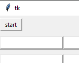

Zacni
Ko je kliknjen gumb, je najprej pozvana funkcija restart, po tem pa nastane novo okno z napisom kdo naj zacne in dvemi gumbi jaz ali ti. Oba gumba unicita okno, funkcija ti pa se odigra prvi krog na enak nacin kot funkcija pressed. V igralni mrezi sem z grid postavil gumbe v mrezo, sedaj sem pa uporabil pack. Potrebuje manj atributov in je dober nacin, da vse napise in gumbe postavi eden zraven drugega, kar sem hotel.
|

|
Funkcija restart
Pred zacetkom zanke sem naredil spremenljivko a, z vrednostjo -1. Za tem pa zanko, ki je tekla dokler ni a bil 2. V tej zanki sem naredil spremenljivko b z vrednostjo tudi -1 in spremenljivki a dodal 1. Temu sledi se ena zanka, ki se ponavlja dokler b ni 2. V zanki najprej b-ju dodam 1, potem pa vrednost na poziciji a,b v seznamih buttons in lines, ki je v drugi datoteki, spremeni na zacetni polozaj.
|